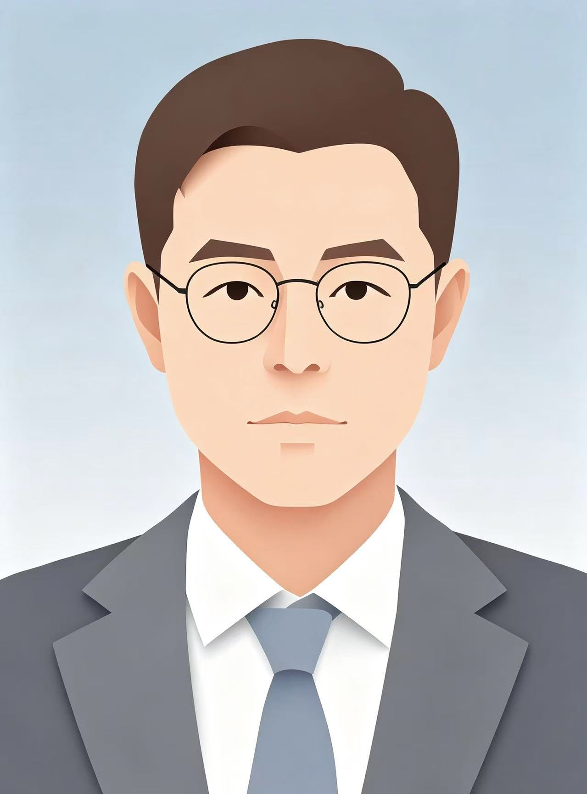

毛岩鹏

毛岩鹏，山东大学核科学与能源动力学院教授/博士生导师，入选全球前2%顶尖科学家榜单，山东省重点紧缺人才，加拿大英属哥伦比亚大学访问学者，澳大利亚新南威尔士大学联合培养博士。现任山东大学能源环境与辐射防护中心主任，环境热工教育部工程研究中心副主任；曾任山东烟台黄渤海新区副主任、山东济南平阴县科技副县长。
主要从事热化学技术开发研究。主持国家级课题7项、省部级课题12项，完成政府、企业各类咨询报告、技术方案、工程设计等100余项，发表高水平论文125篇，授权国家发明专利55项，其中PCT国际专利5项、完成技术转化3项。
获得山东省自然科学奖二等奖、中国循环经济协会一等奖、山东省科技副职突出贡献奖、山东省教学创新大赛三等奖等省部级奖励5项，培养博士后、博士生、硕士生、留学生近50人。
Professor and Ph.D. Supervisor at the School of Nuclear Science and Energy Power Engineering, Shandong University. Listed among the world's top 2% scientists, a key talent in short supply in Shandong Province, a visiting scholar at the University of British Columbia, Canada, and a jointly trained Ph.D. at the University of New South Wales, Australia. Currently Director of the Energy, Environment and Radiation Protection Center of Shandong University and Deputy Director of the Engineering Research Center of Environmental Thermal Engineering, Ministry of Education; previously Deputy Director of the Yantai Huang-Bohai New Area and Deputy County Mayor of Pingyin County, Jinan, Shandong, in charge of science and technology.
His research focuses on the development of thermochemical technology. He has led 7 national-level projects and 12 provincial/ministerial-level projects, completed more than 100 consulting reports, technical proposals, and engineering designs for governments and enterprises, published 125 high-quality papers, and been granted 55 national invention patents, including 5 PCT international patents, with 3 technologies successfully commercialized.
He has received 5 provincial/ministerial awards, including the Second Prize of the Shandong Provincial Natural Science Award, the First Prize of the China Association of Circular Economy, the Outstanding Contribution Award for Science and Technology Deputy Positions in Shandong Province, and the Third Prize of the Shandong Teaching Innovation Competition. He has supervised nearly 50 postdoctoral fellows, doctoral students, master's students, and international students.